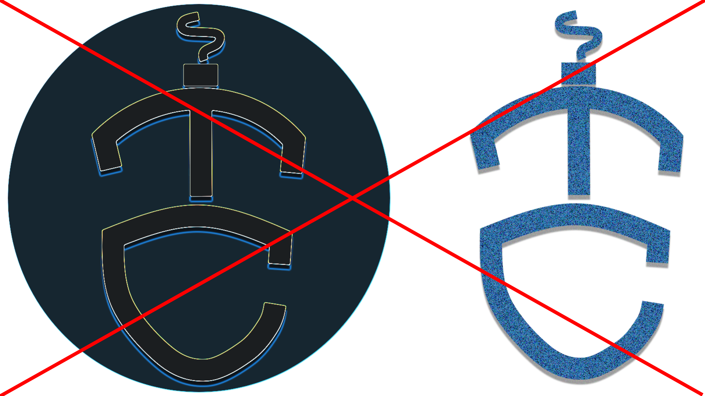

Brand Identification
Welcome.
There might be viewers that will wish to use our logo for their own purpose. But the users
must abide the set restrictions and prohibitions to maintain the brands identity and
retention. This will serve as the guide in using our logo and symbol. To prevent
confusions and silly mistakes.
Note that by using these resources, you accept our Developer Terms of Service.
Usage of these resources may also be covered by the
Tech Channel End User Agreement
and our Privacy Policy.
Our Company
“We will explore the mysteries of science and harness the power of technology and innovation…” – Narendra Modi
The idea of Tech Channel is a broadcast medium company that conveying information about all mind-blowing power of technology updates and awareness of digital innovations in a certain places or in around the world. Its context is an exploratory, ambitious and ground-breaking news and apprises figures of machinery that also allied to the investigation of science, perhaps its uses, materials and benefits. We used minimalist design so that the viewers would easily recognize the brand and be very pleasing to the eye. Tech Channel – the fresh identity is design to meet the future broadcast challenges and exploration in a competitive IT Industry. This document explains the creation of the Tech Channel’s brand, and its applications in many forms. We’ve used different elements, which are carefully picked through long trial and error, that have resulted to a graphic that clearly describes the essence and motivation of our business.
MISSION
To contribute to the prosperity that inform, educate and engage the well-being of veteran minds in spreading the spirit of Information Technology and Innovation.
VISION
To be broadly recognized in disseminating information about tech industry and provides exploratory minds for young generations, that will encourage them to generate disruptive ideas about technology and innovation.
The idea of Tech Channel is a broadcast medium company that conveying information about all mind-blowing power of technology updates and awareness of digital innovations in a certain places or in around the world. Its context is an exploratory, ambitious and ground-breaking news and apprises figures of machinery that also allied to the investigation of science, perhaps its uses, materials and benefits. We used minimalist design so that the viewers would easily recognize the brand and be very pleasing to the eye. Tech Channel – the fresh identity is design to meet the future broadcast challenges and exploration in a competitive IT Industry. This document explains the creation of the Tech Channel’s brand, and its applications in many forms. We’ve used different elements, which are carefully picked through long trial and error, that have resulted to a graphic that clearly describes the essence and motivation of our business.
MISSION
To contribute to the prosperity that inform, educate and engage the well-being of veteran minds in spreading the spirit of Information Technology and Innovation.
VISION
To be broadly recognized in disseminating information about tech industry and provides exploratory minds for young generations, that will encourage them to generate disruptive ideas about technology and innovation.
Our Logo
Our Logo is the pride and identity of our company. That's why we would require its borrowers to use according to our prohibitions and not to go beyond the restrictions to maintain its order.
BRAND VALUE
Tech Channel
is Reliable
LOGO MAKING PROCESS
This is our logo making process this past week.
MOODBOARDS

Our Moodboard is composed of mixed elements, which are: Light and Metallic Color and Texture
different company logos (which also served as our reference),
and abstract background images where we've referred our
logo's vibe.
TREATMENT
LOGO TYPE

Primary Use
With Black Background
With White Background
SYMBOL
Primary Use
With Black Background

With White Background
RULES
LOGO TYPE
|
DON'T alter our arrangement |
|
|
DON'T change our color scheme |
|
|
DON'T change our prescribed font |
|
|
DON'T change our prescribed font color |
|
|
DON'T rotate our logo |
SYMBOL
|  |
DON'T apply textures |
|
DON'T change the color |
|
|
DON'T distort the logo (please) |
TYPOGRAPHY
FUTURA CONDENSED BOLD
|
We use Futura for it has an appearance of efficiency and forwardness. Futura remains an important typeface family and is used on a daily basis for print and digital purposes as both headline body font. Particularly until the 1950's it was used extensively by the publishing industry as a general-pupose font. |
ABCDEFGHIJKLMNOPQRSTUVWXYZ abcdefghijklmnopqrstuvwxyz 1234567890 !@#$%^&*(){}[] |
AVENIR
|
The word avenir is French for "future". As the name suggests, the family takes takes inspiration from the geometric style of sans-serif typeface developed in the 1920s such as Erbar and Futura. They intended Avenir to be a more organic intepretation of the geometric style, more even in colour and suitable for extended text, with details recalling more traditional typefaces such as the two- storey 'a' and 't' with a curl at the bottom, and letters such as the 'o' that are not exact, perfect circles but are optically corrected. |
ABCDEFGHIJKLMNOPQRSTUVWXYZ abcdefghijklmnopqrstuvwxyz 1234567890 !@#$%^&*(){}[] |
LOGO USES
OUR BRAND COLORS
The Logo uses blue and black color which gives a simple, but cool and attractive look
The Limited color pallete reduces confusion on the audience
and emphasize on the
brand and logo.
| #4DADE1 | #1D4E79 | #3F403F | #FFFFFF |
Gradient is used as the background of the logo to make it visible in any background color.
| #4DADE1 | #1D4E79 | #3F403F | #525325 | #FFFFFF |